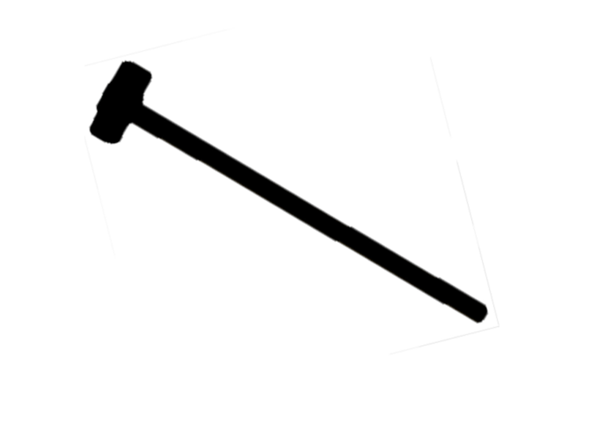
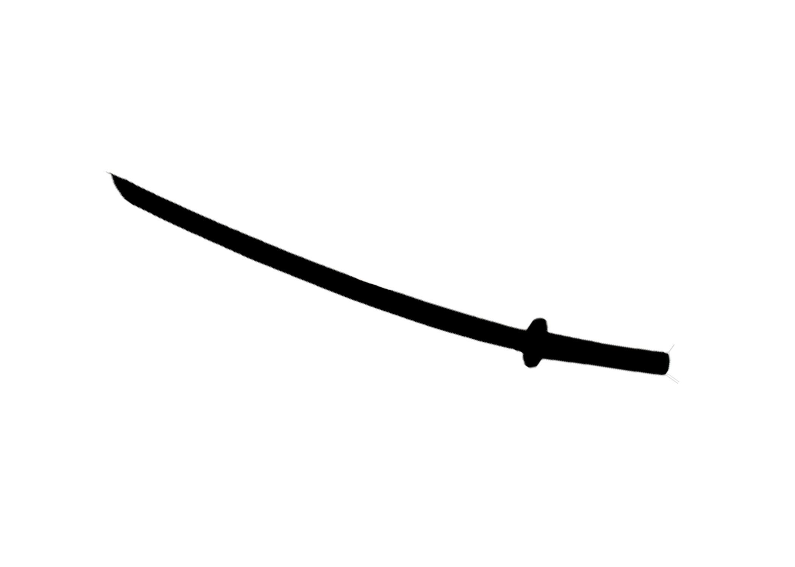
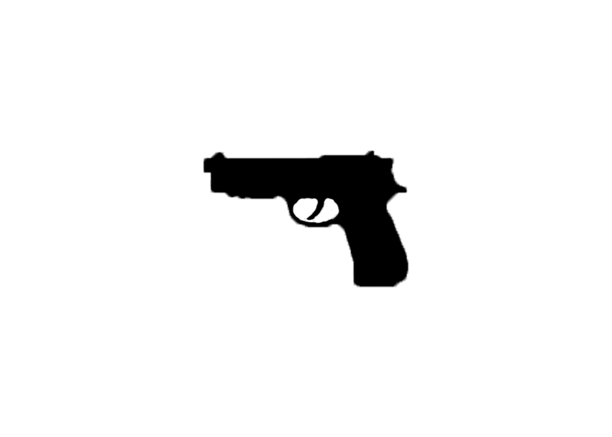

there is a diverse range of weapons at your disposal in a town. the main one you canm come across is a sharp cooking knife in your kitchen. this weapon is bad for an apocalyps because its sort and fragile. while killing a zombie you want to be as far away as possible so you donty get bitten.
the baseball bat is a good choice for a zombie apocalyps becuase its light sturdt and can pack a punch.
bat index

the hammer is a good choice for a few zombies, it is hard to swing but hits extreamly hard.
hammer index

the sorwd is an ideal choice because of the damage it can do if it is used properly, and the light weight and silence
sorwd index
